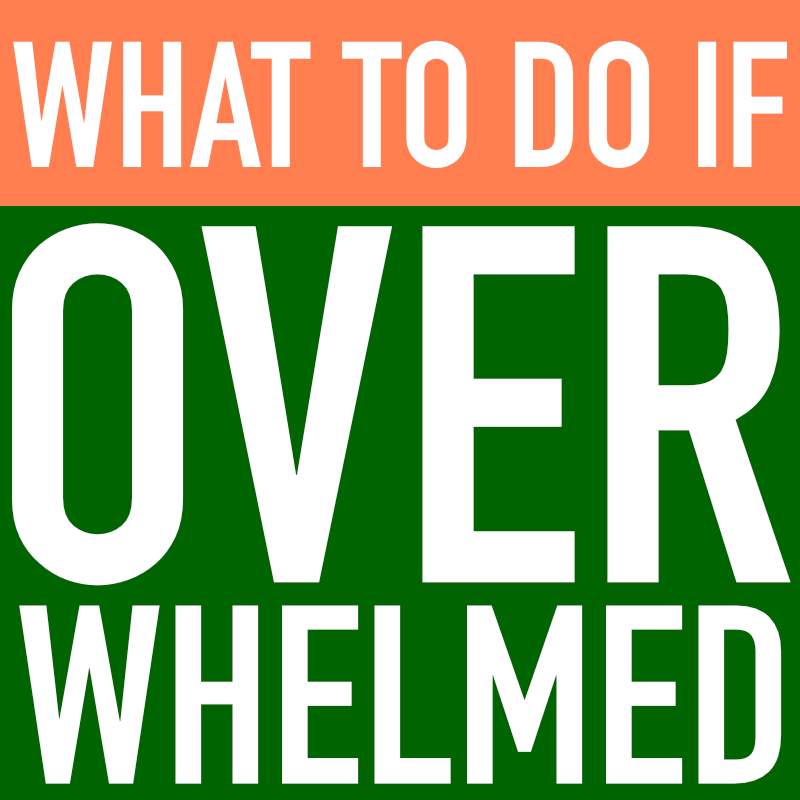

Practicising Mindfulness
When you wake up in the morning, bring attention to your breathing. Instead of letting your mind be distracted of what’s happening around you, take mindful breaths. Focus on your breathing and sense the effects of breathing throughout your body.
Instead of rushing from one place to another, slow down and enjoy something special around you.
Try not to sit at your desk or keyboard for too long, take a break or walk around.
Once you return home, clearly demarcate your work and personal life so, focus on your personal life. Give yourself some time alone too.
Before you go to sleep, put away all distractions. Take some slow, mindful deep breaths.
Adopt a healthy lifestyle
Healthy diet: Including fruits, vegetables, juice, fish and other healthy vegetables in your diet will reduce the negative effects that stress causes on the body.
Be aware of your smoking and alcohol consumption as much as possible: Although these things reduce stress initially, they cause severe damage in the long run.
Regular exercise:Physical exercise can be effective in relieving stress. Even going out to get some fresh air and taking some light physical exercise, like walking to the shops, can help.
Try to get sound sleep:
Sound sleep is important in order to stay stress-free as it keeps us physically and mentally fit. Not getting enough sleep will make you easily tired and will also lower your immune level.
Mindset
Don’t be too hard on yourself: Try to keep things in perspective. After all, we all have bad days.
Reflect
Start a Stress JournalA stress journal can help you identify the regular stressors in your life and the way you deal with them. Each time you feel stressed, keep track of it in your journal. As you keep a daily log, you will begin to see patterns and common themes.
Write down:
What caused your stress? (make a guess if you are unsure)
How you felt, both physically and emotionally?
How you acted in response?
What you did to make yourself feel better?
CLICK HERE FOR JOUNRAL
Socialising
Connect with others:
Spending quality time with another human being who makes you feel safe and understood will help to make you feel more calm.
People you talk to don’t have to be able to fix your stress. They simply need to be good listeners.
Building and maintaining a network of close friends can improve your resilience to life’s stressors.